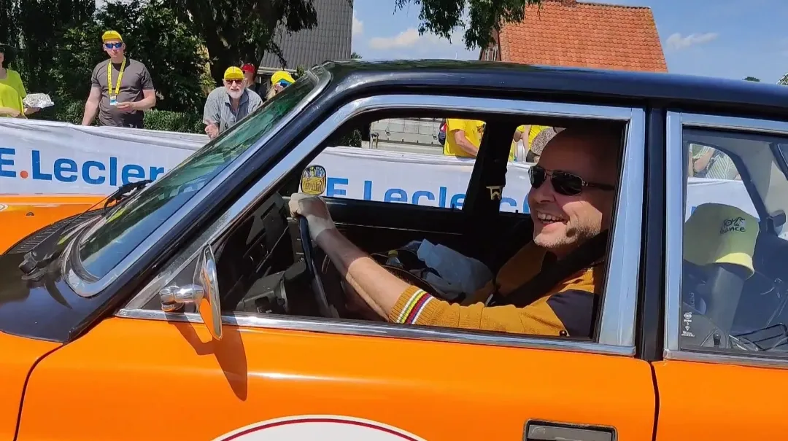
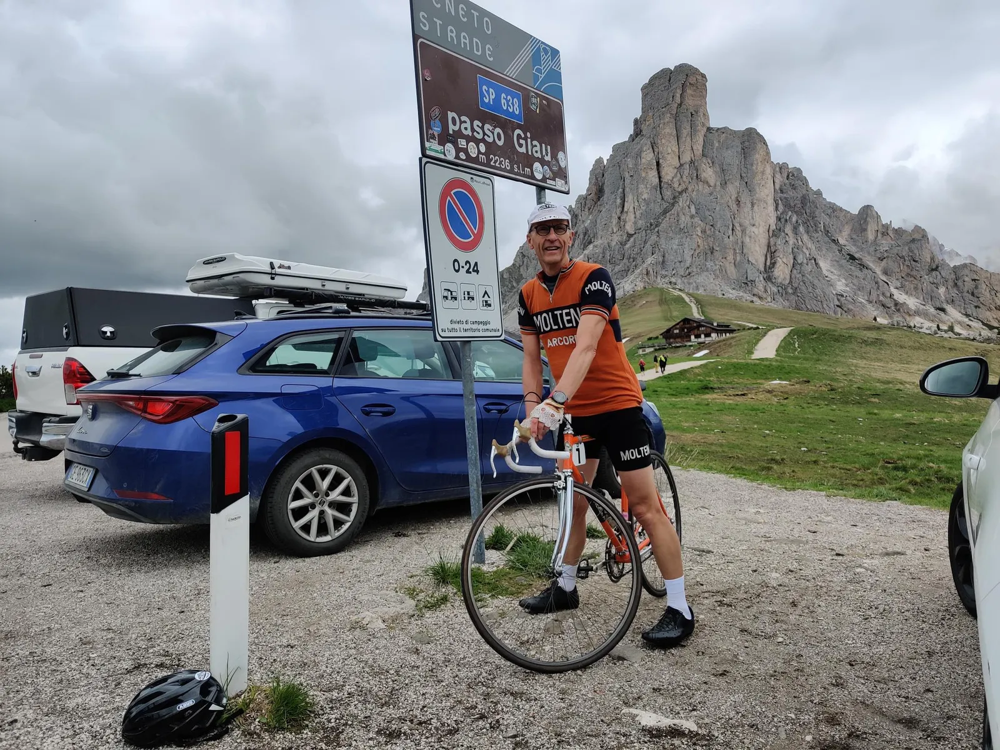

Nedtælling til Lombardiet Revenge Tour 1973 – Højdetræning i Dolomitterne

Mens Moltenifamiliens privatfly bliver tanket i hangaren udenfor Arcore og klargjort til afhentning af fem af G.S. Squadra Molteni’s ryttere samt Gis-Gelati-Pelle, er to mand sendt i forvejen ad landevejen.
Lombardiet Revenge Tour har absolut topprioritet i holdets 2023-sæson, udtaler sportsdirektør Klaus Maarup Kjærsgaard ud af sideruden på sportsdirektør-Volvoen en solbeskinnet Juniaften. Vi har Niels Bjørnsteen, Svend Seegert, Jeppe Thiemer, Lars Munch og Grane Maaløe klar i toptrimmet løbsform til at sætte et vanvittigt tempo på alle flade stykker og så har vi sendt Eigil Leegaard og Kristian Blume på højdetræning i Dolomitterne, for at smadre konkurrenterne på Madonna del Ghisallo og Muro di Sormano. Tiden er kommet! Vi skal have rettet op på den skandaløse beslutning om at fratage Eddy Merckx hans fortjente sejr i 1973.


I det midlertidige højdetrænings-HQ i sydtyrolske La Villa Stern, er humøret højt, og blodværdierne stigende. På ankomstdagen fredag blev Val Parola besigtiget og lørdag gik turen over de fire Sella Ronda pas, Sella, Gardena, Pordoi og Campalongo. Søndag fulgte Val Parola/Falzarego, Giau og Campolongo. I alt ca. 5000 højdemeter.

På en fastnet lånetelefon fra det lokale Ufficio turistico beretter Eigil Leegaard om nogle at turens udfordringer:
Altså… en carbonrytter der formaster sig til at overhale os på en stigning får Blume i mørkerødt felt. Vi har kun været her tre dage og er allerede indkaldt til kammeratlig samtale hernede på turistkontoret. De har haft 5-6 grædende ryttere herinde i går for at klage over Blumes kørsel. De mener selv, at de er i deres gode ret til at køre forbi, fordi de kører med elektrisk 12-speed gear og aerosuits. Men inden de slår hullet, bliver de så jordet i en sky af orange uldfibre. En af dem blev endda skubbet fremad med tilråbet FORZA! for at holde hjul, men i en angiveligt helt umulig acceleration.
Jeg har derfor bedt Blume terpe god opførsel inden i morgen. Det er helt old-school. 500 gange: ”Jeg må ikke jagte carboncykler”, håndskrevet.
Han mener dog ikke, at det nødvendigvis hjælper…